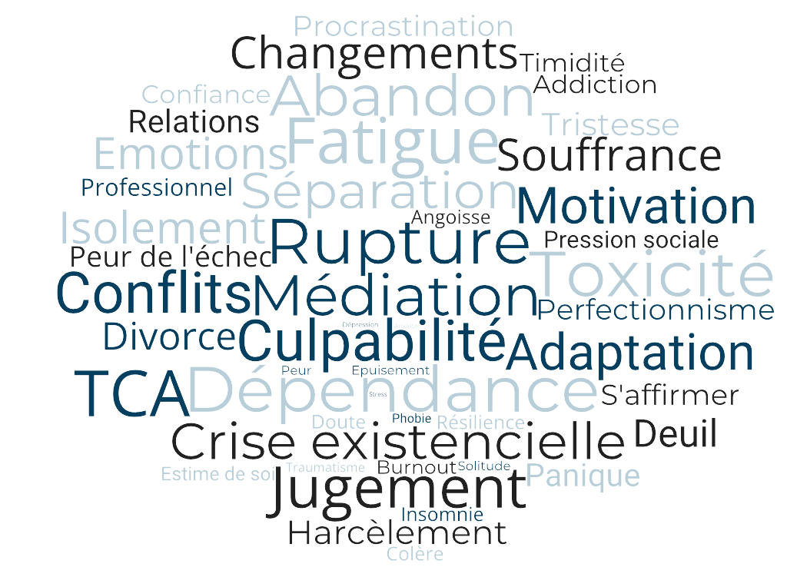

07 62 80 25 77
07 62 80 25 77Pourquoi consulter ?
À partir du moment où l'on souffre, il y a un motif suffisant pour aller consulter un psychologue clinicien psychothérapeute. Un nombre important de souffrances et de symptômes existent : dépression, burn out, tristesse, idées suicidaires, mal-être général, problème de couple, séparation, difficultés avec ses enfants, troubles de la sexualité (vaginisme, impuissance etc.), obsessions, TOC, phobies, peurs, angoisses, anxiété, crise d'angoisse, colère, difficulté à se contrôler, manque de confiance en soi, complexe d'infériorité ou de supériorité, addictions (alcool, drogue, tabac, jeux, sexe etc.), troubles du comportement alimentaire (anorexie, boulimie), timidité excessive, jalousie maladive, dépendance affective, baisse de libido, infidélité, troubles gynécologiques (mycoses, vaginites, infections urinaires etc.), difficulté de conception d'un enfant, désir d'enfant, troubles corporels, maladies (graves, de peau, dysfonctionnement etc.), fatigue chronique... La personne en souffrance peut s'adresser à un psychologue clinicien psychothérapeute, et commencer une psychothérapie, dans le but de comprendre ses symptômes et d'apaiser sa souffrance. Si tel est votre cas, et que vous n'acceptez plus de souffrir, vous pouvez prendre rendez-vous dès aujourd'hui à Paris 9.
On entend souvent parler de la "crise d'adolescence". Mais qu'est-ce que c'est, au juste, l'adolescence ? C'est une période charnière, qui correspond au passage de l'être de l'enfance à la vie d'adulte. Cette position "entre deux" est une position inconfortable car l'adolescent est tiraillé entre cette dépendance encore d'actualité et le désir d'indépendance. C'est donc un passage non sans difficulté car c'est à ce moment que les comportements posent problème. Alors, pourquoi l'adolescence est une période difficile ? L'adolescent est soumis à de nombreux changements non seulement corporels, mais aussi psychiques. Tous ces changements internes qui lui sont imposés vont provoquer des conflits avec l'adolescent lui-même, ainsi qu'avec le monde extérieur (école, famille, amis etc). Beaucoup de symptômes de souffrances sont associés à cette période de transition: problème de comportement, manque de respect, intolérance à la frustration, non respect de l'autorité, violence, agressivité, consommation de drogues, consommation d'alcool excessive, mutisme, renfermement sur soi-même, phobies, troubles du comportement alimentaire (anorexie, boulimie...), cleptomanie, idées suicidaires ou tentatives de suicide, etc. Alors, quand un adolescent peut rencontrer un psychologue ? Lorsque que ces symptômes deviennent trop présents au quotidien, et que l'adolescent est en souffrance. En effet, l'adolescent exprime à travers ces symptômes une souffrance qui peut pousser les parents à amener l'adolescent à consulter un psychologue. Parfois, cela est demandé par les professionnels du milieu scolaire. D'autre fois encore, c'est l'adolescent lui-même qui souhaite sortir de sa souffrance. Vous pouvez prendre rendez-vous chez un psychologue pour adolescent à Paris 9ème dès aujourd'hui.
Pour de multiples raisons, les parents peuvent être amenés à emmener leur enfant en consultation chez un psychologue. Ces raisons peuvent être les suivantes : Troubles du comportement, troubles du spectre autistique, difficultés à l'école (phobie scolaire, chute des résultats), harcèlement, troubles intellectuels, intolérance à la frustration, trouble du déficit de l'attention/hyperactivité (TDHA), crises de colère, angoisse de séparation, angoisse d'abandon, trouble des conduites alimentaires etc. Mais quand est-ce qu'il devient nécessaire d'emmener un enfant chez un psychologue pour une consultation ? Les pleurs, les cris, les caprices, l'opposition face à l'autorité peuvent évidemment être passagers et constituent des expressions de l'enfant plutôt classiques. Alors, le besoin d'amener un enfant en souffrance chez un psychologue clinicien ou un psychothérapeute s'impose, car les divers symptômes de l'enfant sont envahissants, répétitifs, s'installent sur le long terme et empêchent une bonne entente dans les différents environnements qu'il fréquente: famille, école etc. C'est en effet la voie comportementale que l'enfant utilise pour exprimer sa souffrance, son mal-être. Et c'est souvent la raison pour laquelle il est si difficile de le comprendre. Il est donc nécessaire de consulter lorsque la souffrance chez l'enfant et son entourage s'installe. Vous pouvez prendre rendez-vous chez un psychologue pour enfant à Paris dès aujourd'hui.